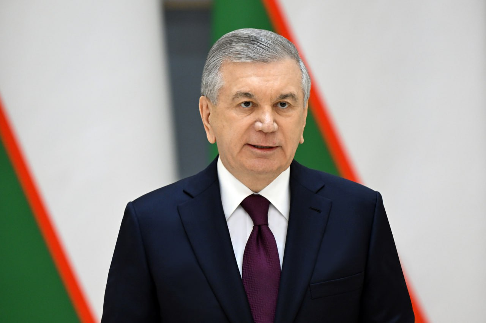

Kasb-hunar ta'limini takomillashtirish: O‘quvchilarga bir vaqtning o‘zida ham o‘qish, ham ishlab daromad topish imkonini beradigan "dual ta’lim" shakli joriy etildi. Bu tizim samarasida 2 ming korxona bilan birgalikda 6 ming yigit-qiz o‘qitilmoqda. Shuningdek, yoshlarga 9-sinfdan keyin kasb-hunar maktabi, 11-sinfdan esa kollej va texnikumlarda turli mutaxassisliklar o‘rgatilmoqda.
Prezident Shavkat Mirziyoyev
